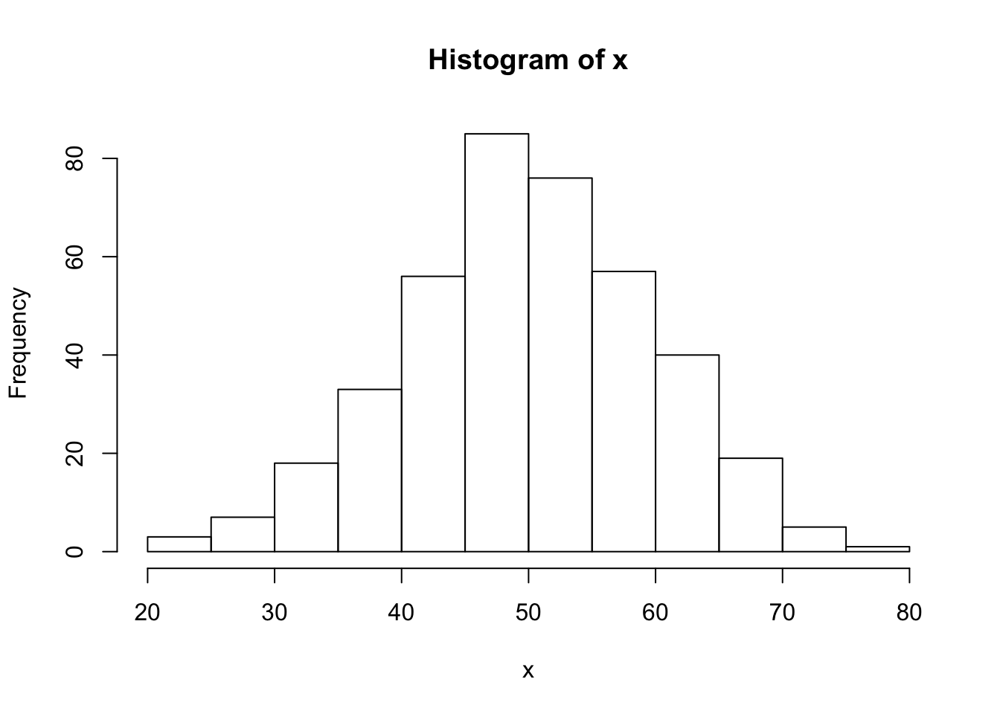

第 2 章 数字
2.1 生成随机数
2.1.1 问题
你想要生成随机数。
2.1.2 方案
要生成均匀分布的随机数，可以使用 runif() 函数，它的默认范围是从 0 到 1。
runif(1)
#> [1] 0.246
# 得到 4 个数字的向量
runif(4)
#> [1] 0.1342 0.8996 0.6340 0.4691
# 得到 3 个范围在 0 到 100 的随机数向量
runif(3, min = 0, max = 100)
#> [1] 54.36 21.23 57.91
# 得到 3 个范围在 0 到 100 的整数 使用 max=101
# 因为它永远不可能等于 101，这里利用 floor
# 函数实现向下取整数
floor(runif(3, min = 0, max = 101))
#> [1] 46 22 28
# 以下方式得到的结果一样
sample(1:100, 3, replace = TRUE)
#> [1] 43 73 6
# 生成无重复的随机整数
sample(1:100, 3, replace = FALSE)
#> [1] 97 85 19要生成服从正态分布的数字，使用 rnorm() 函数，该函数默认均值是 0，标准差是 1。
rnorm(4)
#> [1] -0.49078 -0.01156 1.64095 -0.45335
# 使用不同的均值和标准差
rnorm(4, mean = 50, sd = 10)
#> [1] 47.12 44.02 40.43 50.66
# 通过直方图检查分布是否正确
x <- rnorm(400, mean = 50, sd = 10)
hist(x)
2.1.3 注意
如果你想要生成随机数的结果可重复，参阅生成可重复的随机序列。
2.2 生成可重复的随机序列
2.2.1 问题
你想要生成可重复的随机数序列。
2.2.2 方案
使用 set.seed() 函数，并在括号内放入数字作为种子数。
set.seed(423)
runif(3)
#> [1] 0.1090 0.5973 0.9726
set.seed(423)
runif(3)
#> [1] 0.1090 0.5973 0.97262.3 保持随机数生成器的状态
2.3.1 问题
你想要保存和恢复随机数生成器的状态。
2.3.2 方案
将 .Random.seed 保存到其他变量，之后将变量值赋给 .Random.seed 从而恢复原来的值。
# 这个例子中，先设定随机数种子
set.seed(423)
runif(3)
#> [1] 0.1090 0.5973 0.9726
# 保存种子
oldseed <- .Random.seed
runif(3)
#> [1] 0.7974 0.2278 0.5190
# 做其他随机数生成相关的事情，比如: runif(30) ...# 恢复种子
.Random.seed <- oldseed
# 保存种子之后，得到与之前相同的随机数
runif(3)
#> [1] 0.7974 0.2278 0.5190如果你之前还没有在 R 线程中用过随机数生成器，变量 .Random.seed 将不会存在。如果你对此不确定，应当在保存和恢复之前进行检查：
oldseed <- NULL
if (exists(".Random.seed")) oldseed <- .Random.seed
# 做一些随机数生成操作，比如： runif(30) ...
if (!is.null(oldseed)) .Random.seed <- oldseed2.3.2.1 在函数中保存和恢复随机数生成器的状态
如果你试图在函数中通过使用 .Random.seed <- x 来恢复随机数生成器的状态，结果是行不通的，因为这个操作改变的是名为 .Random.seed 的本地变量，而不是全局环境中的这个变量。
这里有两个例子。这些函数想要做的是生成一些随机数，并使得随机数生成器保留未改变的状态。
# 这是个坏的版本
bad_rand_restore <- function() {
if (exists(".Random.seed"))
oldseed <- .Random.seed else oldseed <- NULL
print(runif(3))
if (!is.null(oldseed))
.Random.seed <- oldseed else rm(".Random.seed")
}
# 这是个好的版本
rand_restore <- function() {
if (exists(".Random.seed", .GlobalEnv))
oldseed <- .GlobalEnv$.Random.seed else oldseed <- NULL
print(runif(3))
if (!is.null(oldseed))
.GlobalEnv$.Random.seed <- oldseed else rm(".Random.seed", envir = .GlobalEnv)
}
# 坏的版本没有正确地重置随机数生成器状态，因此随机数一直在改变
set.seed(423)
bad_rand_restore()
#> [1] 0.1090 0.5973 0.9726
bad_rand_restore()
#> [1] 0.7974 0.2278 0.5190
bad_rand_restore()
#> [1] 0.6929 0.8104 0.1019
# 好的版本每次都正确地重置了随机数生成器的状态，因此随机数可以保持一致
set.seed(423)
rand_restore()
#> [1] 0.1090 0.5973 0.9726
rand_restore()
#> [1] 0.1090 0.5973 0.9726
rand_restore()
#> [1] 0.1090 0.5973 0.97262.3.2.2 注意
使用者最好不要修改 .Random.seed 变量。
2.4 对数值取整
2.4.1 问题
你想要对数值取整。
2.4.2 方案
存在许多种取整的方式：向最近的整数取整，向上或向下取整或者向 0 取整。
x <- seq(-2.5, 2.5, by = 0.5)
# 向最近的整数取整, 含有 .5 的值取整到最近一个偶数。
round(x)
#> [1] -2 -2 -2 -1 0 0 0 1 2 2 2
# 向上取整
ceiling(x)
#> [1] -2 -2 -1 -1 0 0 1 1 2 2 3
# 向下取整
floor(x)
#> [1] -3 -2 -2 -1 -1 0 0 1 1 2 2
# 向 0 取整
trunc(x)
#> [1] -2 -2 -1 -1 0 0 0 1 1 2 2也可以近似到其它小数位：
x <- c(0.001, 0.07, 1.2, 44.02, 738, 9927)
# 1 位小数近似
round(x, digits = 1)
#> [1] 0.0 0.1 1.2 44.0 738.0 9927.0
# 10 位取整
round(x, digits = -1)
#> [1] 0 0 0 40 740 9930
# 向最近的 5 的倍数近似
round(x/5) * 5
#> [1] 0 0 0 45 740 9925
# 向最近的 .02 的倍数近似
round(x/0.02) * 0.02
#> [1] 0.00 0.08 1.20 44.02 738.00 9927.002.5 比较浮点数
2.5.1 问题
浮点数比较结果通常未能如你所想。比如：
0.3 == 3 * 0.1
#> [1] FALSE
(0.1 + 0.1 + 0.1) - 0.3
#> [1] 5.551e-17
x <- seq(0, 1, by = 0.1)
x
#> [1] 0.0 0.1 0.2 0.3 0.4 0.5 0.6 0.7 0.8 0.9 1.0
10 * x - round(10 * x)
#> [1] 0.000e+00 0.000e+00 0.000e+00 4.441e-16 0.000e+00
#> [6] 0.000e+00 8.882e-16 8.882e-16 0.000e+00 0.000e+00
#> [11] 0.000e+002.5.2 方案
不存在通用的解决方案，因为这个问题通常是由于非整数（浮点数）在计算机和 R 中的存储方式所导致的。可以通过网址 http://www.mathworks.com/support/tech-notes/1100/1108.html 查阅更多信息。虽然里面使用 Matlab 代码写的，但是基本与 R 一致。